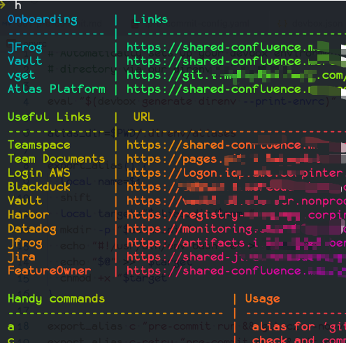

Dev Envrionment As Code - Devbox 使用指南
TLDR
本文介绍了使用 devbox, 以 开发环境即代码 的方式搭建了团队本地开发环境, 同时介绍了一些团队中基于 devbox 实践经验, 有效帮助团队提高开发效率
- 集成
pre-commit, 自动初始化 - 集成
co-author脚本, 自动添加pair - 集成 conventional-commit, 规范提交信息
- 为团队定制化指令, 提供快捷方式
挑战
切换项目是一个 TWer 需要面对的挑战, 当做为一个项目新人, 比较重要的一项工作就是下载代码, 安装依赖, 使代码能正确在本地启动并运行.
常常需要以下几个步骤
- 下载应用的运行环境或编译环境, 如
JDK,NodeJs,ruby,python,gcc或rustup, 并且版本需要一致 - 下载应用包管理程序,
yarn,gradle/maven,sbt,cargo,bundler, 并保证版本一致 - 设置构建/运行程序必要环境变量, 比如企业内部maven repository地址/token, npm retristry 地址/Token
- 下载安装 "开发/部署/管理" 应用的脚本/命令, 如
pre-commit,tf-lint,kubectl,awscli等 - 手动运行一些初始化脚本, 如
pre-commit init安装git-hooks - 学习使用一些项目定制好的脚本, 可以快速启动项目
通常项目代码里的 README.md 会提供详细的运行文档, 新人根据文档手动执行各种命令, 完成安装运行; 如果遇到问题, 找人提供对应的指导. 这种模式存在几个问题:
- 文档更新滞后 - 大多数时候, 随着项目的演进, 文档大部分时候总是滞后并缺少维护. 最终都是新人花很多的时间进行定位
- 运行环境不一致 - 项目中成员的机器可能都装了不同版本的 JVM, NodeJs, ruby, python 作为默认开发环境, 各个版本五花八门. 导致应用在某些特定版本的开发环境上表现不一致. 当在不同项目中切换时, 经常需要引入不同虚拟机管理工具 如
NVM,RVM,asdf,SDKMan - 手动安装的不可重复性 - 手动安装的命令/程序不可靠,
- 如命令版本太新/太旧导致, 导致不能运行
- 如经常会漏掉执行一些初始化脚本
为什么是 Devbox
Devbox 系统级(System level)的包管理程序, 如yarn/npm 之于 NodeJs.
Devbox 根植于 Nix-shell, 不同于 Nix-shell繁杂的配置脚本, Devbox 提供了用户友好的配置方式.
以下是一份Devbox 的配置文件(devbox.json):
{
"$schema": "https://raw.githubusercontent.com/jetpack-io/devbox/0.10.1/.schema/devbox.schema.json",
"packages": [
"pre-commit@latest",
"gitleaks@latest",
"cz-cli@latest",
"nodePackages.pnpm@latest",,
"python@3.12"
],
"env": {
"ARTIFACTORY_URL": "https://artifacts.i.internal-maven.com/artifactory"
},
"shell": {
"init_hook": [
"source $VENV_DIR/bin/activate"
],
"scripts": {
"init": [
"pip install -r requirements.txt -q",
"pre-commit install",
"if [[ ! -e ./node_modules/cz-git ]]; then commitizen init cz-git --pnpm --save-dev --save-exact --force; fi",
]
}
}
}
根据上面的配置文件，Devbox可以帮助简化环境配置:
- 自动安装依赖项，例如JDK, NodeJS, 请参照配置中
packages - 自动环境变量导入，参照上面的字段
env. - 初始化脚本, 来准备一些数据或初始化shell环境，参考上面的
init_hook字段. - 定制命令，参考上面的字段
scripts.
并且 devbox 会生成 devbox.lock, 类似于 yarn.lock, 进行锁定版本. 当将 devbox.json 和 devbox.lock 托管到 git 后, 执行devbox install 就能帮助下载所有的依赖, 并保证不同机器上安装的版本一致.
快速上手
因为 Nix-shell 仅对 Linux, macOS 这两个平台做了支持, 所以 Devbox 也只支持了这两个平台. 更多细节可以参考官方文档 quick start
- 安装/初始化
devbox
> curl -fsSL https://get.jetpack.io/devbox | bash
> mkdir test_repo && cd test_repo
> devbox init
- 查找安装包
> # Search package
> devbox search openjdk --show-all
* openjdk (19.0.1+10, 19.0.1, 17.0.3, 17.0.3+7, 17.0.1, 17.0.1+12, 16.0.1, 16+36, 16.0.0, 15.0.1-ga, 14.0.2-ga, 8u265-ga, 8u242-b08)
* openjdk8 (8u352-ga, 8.0.292, 8u322-ga, 8u272-b10, 8.36.0.1, 8u265-ga, 8u242-b08)
* openjdk11 (11.0.17+8, 11.0.11, 11.0.15+10, 11.0.12+7, 11.0.11+9, 11.0.10+9, 11.0.9+11, 11.0.8+10, 11.0.7-ga, 11.0.6-ga)
* openjdk14 (14.0.2-ga, 14.0.1-ga)
* openjdk15 (15.0.1-ga)
* openjdk16 (16.0.1, 16+36, 16.0.1, 16.0.0)
* openjdk17 (17.0.5+8, 17.0.3, 17.0.3+7, 17.0.1, 17.0.1+12, 16.0.1)
* openjdk19 (19.0.1+10, 19.0.1)
# Install JDK
> devbox add openjdk@17.0.3
> devbox add nodejs
> ls
devbox.json devbox.lock
> cat devbox.json
{
"packages": [
"openjdk@17.0.3",
"nodejs@latest"
],
"shell": {
"init_hook": [
"echo 'Welcome to devbox!' > /dev/null"
],
"scripts": {
"test": [
"echo \"Error: no test specified\" && exit 1"
]
}
}
}
- 加载 devbox shell, 启用 devbox 安装的依赖
# Start a isolated shell
> devbox shell
> java -version
openjdk version "17.0.3" 2022-04-19 LTS
OpenJDK Runtime Environment Zulu17.34+19-CA (build 17.0.3+7-LTS)
OpenJDK 64-Bit Server VM Zulu17.34+19-CA (build 17.0.3+7-LTS, mixed mode, sharing)
进阶使用
在引入了 devbox 之后, 我们可以最大程度定制化团队的开发环境. 以下是我们团队的一些实践
在终端(terminal)自动加载 devbox shell
direnv 是 shell 的扩展程序. 他可以根据用户在终端进入到目录。自动加载和卸载环境变量.
利用 direnv，我们可以在进入项目目录时自动加载/卸载 devbox.
- 安装
direnv
brew install direnv # Will take times, be patients
# This command is only for zsh
# The other shell hook, pls refer to: https://direnv.net/docs/hook.html
cat <<EOF >> ~/.zshrc
eval "\$(direnv hook zsh)"
EOF
- 在项目目录中添加
.envrc文件
cat <<EOF > .envrc
eval "\$(devbox generate direnv --print-envrc)"
EOF
至此, 团队成员只需首次安装 direnv 和 devbox 即可.它们将自动帮助团队统一(unify)开发环境, 且无需任何额外配置.
自动初始化 - pre-commit hooks
pre-commit 是一个命令行工具, 它可通过一个简单的配置文件管理和维护 git commit/push 钩子。
pre-commit 允许我们共享一些通用的 git hooks，从而使团队获得统一的 git 体验.
遗憾的是，每当我们开始开发一个新仓库时，开发人员都需要使用 brew install pre-commit && pre-commit install 命令手动安装 pre-commit.
有了 devbox, 这种手动的工作就可以省去了. devbox 自动为你初始化
{
"packages": [
"pre-commit@latest"
],
"shell": {
"init_hook": [
"pre-commit install"
]
}
}
pre-commit 配置文件如下, 所有修动都会在提交时, 根据以下规则进行检查.
fail_fast: true
default_install_hook_types:
- pre-commit
- pre-push
repos:
- repo: https://github.com/pre-commit/pre-commit-hooks
rev: v4.5.0
hooks:
- id: check-added-large-files
- id: check-merge-conflict
- id: check-yaml
- id: detect-private-key
- id: end-of-file-fixer
- id: fix-byte-order-marker
- id: mixed-line-ending
- id: trailing-whitespace
定制化脚本 - co-author.sh
结对编程(pair programming)在我们的日常编码工作中扮演着重要角色.在结对过程中，当在 git 中提交信息时，一般都需要在提交信息(commit message)中指定共同作者
根据 github 的规范, 可以在 commit message 按照如下格式指定 co-author, github 就会按照提交的内容展示共同作者.
$ git commit -m "Refactor usability tests.
>
>
Co-authored-by: NAME <NAME@EXAMPLE.COM>
Co-authored-by: ANOTHER-NAME <ANOTHER-NAME@EXAMPLE.COM>"
下面这个脚本可以设置为 git-hooks - prepare-commit-msg, 在提交信息之后, 终端会弹出选择列表, 让选择 Co-author.
#!/bin/bash
set -euo pipefail
if [ ! -t 1 ] ; then exit 0; fi
BRANCH_NAME=$(git branch | grep '*' | sed 's/* //')
if [[ "$BRANCH_NAME" =~ 'no branch' ]] ; then exit 0; fi
exec < /dev/tty
echo 'Please select your pair from the authors list:'
MESSAGE=$(
cat <<EOF
$(cat $1)
$(git shortlog -sce | cut -c8- | fzf -m --height 30% --border --prompt="Multi select by <tab>, No select by <C-c>:" | xargs -I '{}' echo "Co-authored-by: {}")
EOF
)
exec <&-
sed -i.bak "/Co-authored-by:.*/d" $1
echo "$MESSAGE" > $1
借助 devbox, 我们可以安装这个脚本需要用到的依赖 fzf, 并且自动将脚本挂载到 .git/hooks/prepare-commit-msg
{
"packages": [
"fzf@latest"
],
"shell": {
"init_hook": [
"cp ./tooling/co-author.sh .git/hooks/prepare-commit-msg"
]
}
}
运行效果如下:
由于录制原因, co-author 真实截图如下:

统一的提交格式 - 约定式提交(Conventional Commits)
A specification for adding human and machine readable meaning to commit messages
按照 Conventional Commits 提倡的方式，提交信息的结构应如下所示：
<type>[optional scope]: <description>
[optional body]
[optional footer(s)]
fix: prevent racing of requests
Introduce a request id and a reference to latest request. Dismiss
incoming responses other than from latest request.
Remove timeouts which were used to mitigate the racing issue but are
obsolete now.
Reviewed-by: Z
Refs: #123
使用 Conventional Commits, repo 中的所有提交信息都会保持一致.通过引入 git-cz 和 cz-git 工具，团队就能轻松地以交互式的方式生成符合规范的提交

借助 devbox, 我们也能自动化所有 git-cz 的安装操作, 之后，我们就可以使用 git cz 以交互方式提交代码了.
{
"packages": [
"nodejs@16.20.2",
"nodePackages.pnpm@latest",
"cz-cli@latest"
],
"shell": {
"init_hook": [
"if [[ ! -e ./node_modules/cz-git ]]; then commitizen init cz-git --pnpm --save-dev --save-exact --force; fi",
],
"scripts": {}
}
}
如果团队开发每次提交代码需要将 Jira 卡号加入 commit 的信息可以使用插件 cz-conventional-changelog-for-jira, 如图所示
定制命令
借助 direnv 的自动加载功能, 以及 devbox 安装依赖. 我们可以为项目定制快捷操作
.envrc 代码如下
alias_dir=$PWD/.direnv/aliases
export_alias() {
local name=$1
shift
local target="$alias_dir/$name"
mkdir -p "$alias_dir"
echo "#!/usr/bin/env bash -e" > "$target"
echo "$@" >> "$target"
chmod +x "$target"
}
export_alias c "pre-commit run && git cz --no-verify"
export_alias c-retry "pre-commit run && git cz --retry"
export_alias a "git add . -p"
export_alias gpush "git push --set-upstream origin \$(git symbolic-ref --short HEAD) \${@} && mkdocs gh-deploy"
export_alias grebase "git fetch origin main && git rebase origin/main"
export_alias up "devbox services up"
export_alias h "$(
cat <<EOCOMMOND
cat <<EOF | csvlook -d ';' | lolcat
Handy commands;Usage
a; alias for 'git add . -p'
c; check and commit
c-retry; commit with previous message
up; devbox services up
h; print all help links and commands
gpush; push to origin main and deploy
gpush -f; push to origin main force and deploy
grebase; fetch remote main and rebase to main
EOF
EOCOMMOND
)"
PATH_add "$alias_dir"
以上代码会在项目中创建 创建临时目录 .direnv/aliases, 并写入一些快捷命令, 如
c, 使用pre-commit快速检查, 并使用git cz生成符合规范的提交a, 为git add . -p的别名gpush, 推送代码到远端分支h, 帮助列出所有的快捷命令, 但是需要devbox提前安装csvlook和lolcat
效果如下
定制网址速查表
利用以上脚本, 同时可以将项目相关的一些链接/网址加入到表中, 让开发人员在开发过程中丝滑地找到相关资源; 还可以加入 Onboarding 的链接, 方便新人.

本地秘钥管理
在日常工作中, 开发人员有时需要在 shell 中设置一些环境变量来执行命令, 例如 ARTIFACTORY_TOKEN, GITHUB_TOKEN. 通常, 我们会把这些秘钥都放在 .zshrc 或 .bashrc 中, 但这样做并不雅观, 会污染全局环境.
使用 envrc, 我们可以在项目中设置环境.
在 .envrc 中，添加代码 [[ -e .env.local ]] && source .env.local, 并要求开发人员在本地项目创建 .env.local
export ARTIFACTORY_USER="xxxx"
export ARTIFACTORY_TOKEN="$(security find-generic-password -s artifactory-token -w)"
export ARTIFACTORY_AUTH_TOKEN=$(echo -n "${ARTIFACTORY_USER}:${ARTIFACTORY_TOKEN}" | base64 -w 0)
export GITHUB_TOKEN='xxx'
同时不要忘记将 .env.local 添加到 .gitignore
至此, 在进入目录项目后, 这些关于秘钥的环境变量才会加载.
写在最后
结合 devbox 可以一定程度帮助团队提高开发效率. Devbox 也可以和各种 CI 平台集成, 提供统一的构建和开发环境, 并且devbox 也提供了对 process-compose 集成, 作为 docker-compose 的一个替换项, 提供了相对于 docker 更好的性能. 感兴趣的小伙伴可以下来探索.
PS: 所有代码可以在 example 找到.